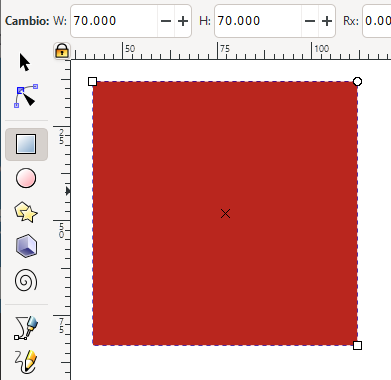
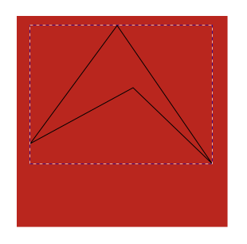
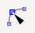
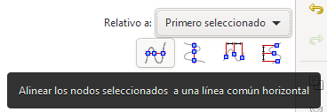
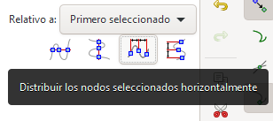
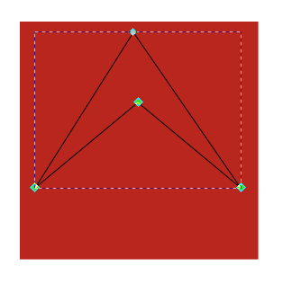
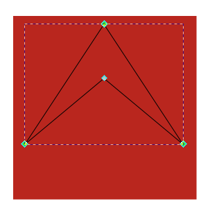
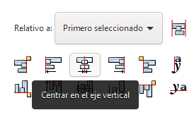

6. Logotipo Citroën¶
Abrimos un nuevo documento con Inkscape.
Con la herramienta de dibujar cuadrados y rectángulos
 dibujamos un cuadrado y cambiamos sus dimensiones
a 70 por 70 milímetros en la barra superior.
El logotipo de Citroën no es exactamente cuadrado, pero el resultado
que obtenemos es una aproximación muy cercana al original.
dibujamos un cuadrado y cambiamos sus dimensiones
a 70 por 70 milímetros en la barra superior.
El logotipo de Citroën no es exactamente cuadrado, pero el resultado
que obtenemos es una aproximación muy cercana al original.En el menú de
Objeto... Relleno y borde...cambiamos los valores de relleno RGB a 185 Rojo, 38 Verde y 30 Azul.Con la herramienta de dibujar líneas y curvas
 dibujamos dos puntas como en la imagen.
Por ahora no nos preocupamos de la precisión de los puntos,
más adelante podremos situarles mejor.
dibujamos dos puntas como en la imagen.
Por ahora no nos preocupamos de la precisión de los puntos,
más adelante podremos situarles mejor.Ahora utilizaremos la herramienta de edición de nodos  para alinear los nodos entre sí.

Seleccionamos los nodos 2 y 4 y en el menú
Objeto... Alinear y distribuir...pinchamos en alinear nodos seleccionados a una línea común horizontal.Ahora seleccionamos los nodos 2, 3 y 4 y en el menú
Objeto... Alinear y distribuir...pinchamos en distribuir los nodos seleccionados horizontalmente.Los nodos se pueden seleccionar pinchando sobre cada uno de ellos mientras se pulsa la tecla mayúsculas
 .
.Los nodos 2, 3 y 4 quedarán uniformemente distribuidos.
Para terminar con este apartado, seleccionamos los nodos 1, 2 y 4 y volvemos a distribuirlos horizontalmente.
Los nodos se pueden seleccionar pinchando sobre cada uno de ellos mientras se pulsa la tecla mayúsculas
.El resultado será el siguiente.
Para terminar de colocar los nodos, moveremos el nodo 3 hacia arriba mientras pulsamos la tecla control
 para evitar que se
mueva en horizontal.
para evitar que se
mueva en horizontal.Terminada la colocación de nodos, podemos escoger la herramienta de seleccionar
 para modificar el tamaño exterior y
la posición del dibujo.
para modificar el tamaño exterior y
la posición del dibujo.Una vez terminado, desde el menú
Objeto... Alinear y distribuir...colocaremos el dibujo en el centro del cuadrado.Solo falta cambiar con el menú
Objeto... Relleno y borde...el color de relleno a blanco y quitar el color de trazo.Ahora seleccionamos y duplicamos la forma blanca y la movemos hacia abajo pulsando la tecla control para asegurarnos de que no se mueve en horizontal.
Para terminar seleccionaremos las dos formas blancas y las agruparemos con el menú
Objeto... Agrupar.Una vez agrupadas, podemos seleccionar todos los dibujos y centrar verticalmente las figuras blancas, para dar por terminado el logotipo.